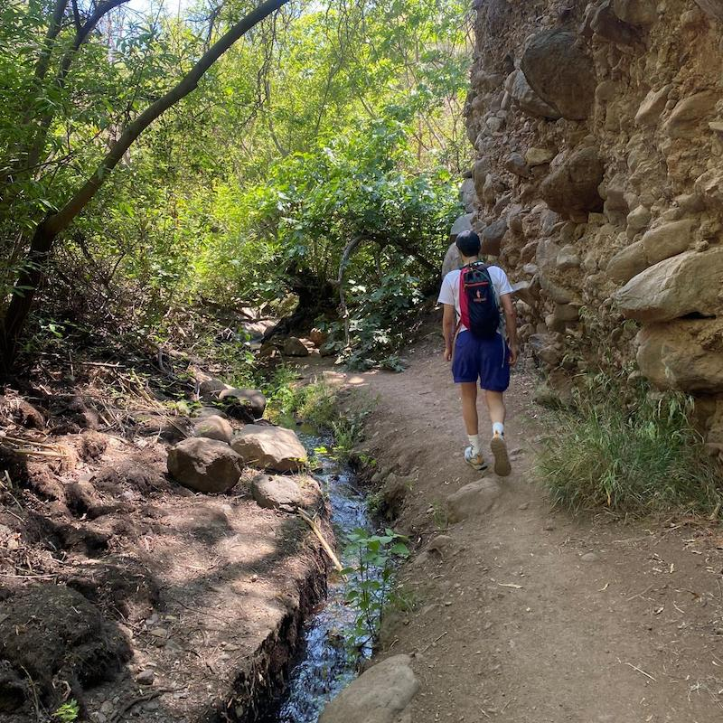

Hello, I’m Diogo.
This is my notebook, an archive for projects, and a place for learning about the web.

Interests
- Citizen science.
- Visual design history.
- Web standards and digital accessibility.
- Digital archives.
Job
I design science communication materials for projects funded by the European Union.
Elsewhere on the web
- Are.na channels.
- Internet Archive favourites.
- Bandcamp music collection.
- iNaturalist observations.
- Library Thing books.